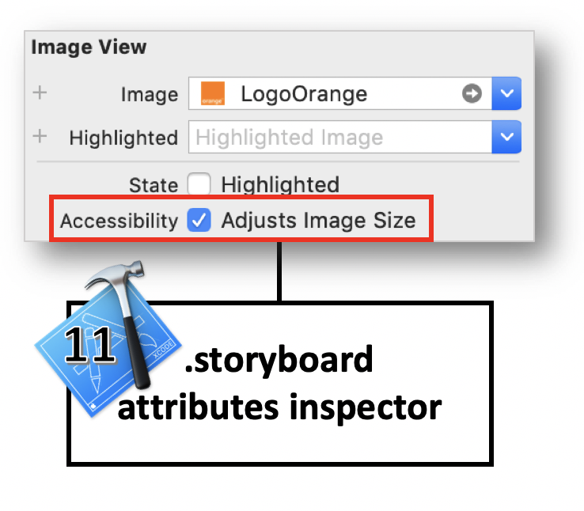

Guide pour les développeurs iOS
Ce guide a pour objectif de présenter les différentes notions d’accessibilité sous iOS 12 en associant :
- Des explications détaillées concernant les attributs et méthodes d'accessibilité.
- Des exemples de code en Swift 5.0 et en Objective C (Xcode 10, iOS 12).
- Des liens vers la
documentation officielle Apple.
Nature des éléments
accessibilityTraits permet de donner une information à l’API d’accessibilité sur la nature d’un composant.
De ce fait, l’accessibilityTrait joue également sur la vocalisation de l’élément car cette nature est restituée par VoiceOver.
accessibilityTrait est disponible via l’interface builder de Xcode mais également utilisable directement via le code.Il existe beaucoup de traits dont les principaux sont fournis ci-dessous :
- accessibilityTraitNone : supprime toute valeur sémantique à l’élément.
- accessibilityTraitButton : ajoute le trait « bouton », l’élément est vu comme un bouton par VoiceOver.
- accessibilityTraitLink : utile pour définir un label en tant que « lien ».
- accessibilityTraitHeader : permet de définir un élément comme un en-tête (voir la section « titre et en-tête »).
- accessibilityTraitAdjustable : permet de définir un élément comme un élément « ajustable », c’est-à-dire un élément dont la valeur instantanée peut être modifiée via un geste spécifique de VoiceOver.
- (void)customTraits() {
//Spécification d'un UIPageControl avec le trait ’ajustable’.
pageControl.accessibilityTraits = UIAccessibilityTraitAdjustable;
//Ajout d'un en-tête.
defaultHeaderViewCell.accessibilityTraits = UIAccessibilityTraitHeader;
}
func customTraits() {
//Spécification d'un UIPageControl avec le trait ’ajustable’.
pageControl.accessibilityTraits = .adjustable
//Ajout d'un en-tête.
defaultHeaderViewCell.accessibilityTraits = .header
}
accessibilityTrait est en réalité un bitmask pour lequel chaque élément pris individuellement peut prendre une valeur spécifique.
 Il est donc possible d'ajouter et d'enlever plusieurs
Il est donc possible d'ajouter et d'enlever plusieurs traits présents pour caractériser un élement après avoir vérifié leur existence par exemple.
- (void)changeTraits {
//Création d'un jeu de traits qui efface le contenu précédent du bitmask.
onePageButton.accessibilityTraits = UIAccessibilityTraitButton | UIAccessibilityTraitLink;
//Ajouts de traits au contenu existant du bitmask.
pageControl.accessibilityTraits |= UIAccessibilityTraitHeader; //Only one trait.
pageControl.accessibilityTraits |= UIAccessibilityTraitButton + UIAccessibilityTraitLink; //Many traits.
//Suppression d'un trait.
onePageButton.accessibilityTraits &= ~UIAccessibilityTraitLink;
//Vérification de l'existence d'un trait au sein du bitmask.
if ((pageControl.accessibilityTraits & UIAccessibilityTraitHeader) != 0) {
// Tâches à réaliser si le trait '.header' est présent...
}
}
func changeTraits() {
//Création d'un jeu de traits qui efface le contenu précédent du bitmask.
onePageButton.accessibilityTraits = [.button, .link]
//Ajouts de traits au contenu existant du bitmask.
pageControl.accessibilityTraits.insert(.header) //Only one trait.
pageControl.accessibilityTraits.formUnion([.button, .link]) //Many traits.
//Suppression d'un trait.
onePageButton.accessibilityTraits.remove(.link)
//Vérification de l'existence d'un trait au sein du bitmask.
if (pageControl.accessibilityTraits.rawValue & UIAccessibilityTraits.header.rawValue == UIAccessibilityTraits.header.rawValue) {
// Tâches à réaliser si le trait '.header' est présent...
}
}
Alternatives textuelles
label, hint, value et trait.L’ordre de vocalisation est toujours le même (
label, value, trait et hint), il ne peut pas être changé et la vocalisation est réalisée en une seule fois à l’arrivée sur l’élément.
Une section de ce guide étant dédiée au trait, nous décrivons ici les 3 autres attributs :
- accessibilityLabel : le label permet de préciser le titre spécifique à l’accessibilité qui est lu par VoiceOver en lieu et place du texte du composant si celui-ci en possède un, ce qui permet d’avoir un texte de composant plus explicite que celui affiché à l’écran. Par exemple, dans le cas d’un bouton dont le titre est « OK », on peut indiquer que le bouton sert à valider un choix.
- accessibilityValue : la valeur d’un élément est, par défaut, le pourcentage de progression.
À noter que, pour la plupart des éléments ajustables disponibles dans le SDK, cette
valuen’a pas besoin d’être précisée car le système restitue automatiquement la valeur à l’utilisateur via VoiceOver. - accessibilityHint : le
hintpermet de décrire le comportement du composant en incorporant des explications supplémentaires. Exemple : « cliquez pour obtenir le résultat ».
Ces attributs sont disponibles via l’interface builder de Xcode mais également accessibles en programmation.
Tout élément dérivant de UIView possède ces attributs qui acceptent une chaîne de caractère les rendant ainsi internationalisables.
@interface ChangeTextView() {
__weak IBOutlet UILabel * monLabel;
__weak IBOutlet UIProgressView * maProgressView;
}
@end
@implementation ChangeTextView
- (void)viewDidAppear:(BOOL)animated {
[super viewDidAppear:animated];
monLabel.accessibilityLabel = @"bonjour";
monLabel.accessibilityHint = @"Ceci est un commentaire supplémentaire.";
maProgressView.accessibilityValue = @"45 pour cent";
}
@end
class ChangeTextView: UIViewController {
@IBOutlet weak var monLabel: UILabel!
@IBOutlet weak var maProgressView: UIProgressView!
override func viewDidAppear(_ animated: Bool) {
super.viewDidAppear(animated)
monLabel.accessibilityLabel = "bonjour"
monLabel.accessibilityHint = "Ceci est un commentaire supplémentaire."
maProgressView.accessibilityValue = "45 pour cent"
}
}
Date, heure et nombres
label, on s'aperçoit rapidement que le rendu n'est pas naturel à l'écoute.
 Il faut absolument formater les données en entrée pour obtenir une vocalisation descriptive naturelle et compréhensible.
Il faut absolument formater les données en entrée pour obtenir une vocalisation descriptive naturelle et compréhensible.

NSDateFormatter * dateFormatter = [[NSDateFormatter alloc]init];
[dateFormatter setDateFormat:@"dd/MM/yyyy HH:mm"];
NSDate * date = [dateFormatter dateFromString:@"01/04/2015 05:30"];
dateLabel.text = [NSDateFormatter localizedStringFromDate:date
dateStyle:NSDateFormatterShortStyle
timeStyle:NSDateFormatterNoStyle];
dateLabel.accessibilityLabel = [NSDateFormatter localizedStringFromDate:date
dateStyle:NSDateFormatterMediumStyle
timeStyle:NSDateFormatterNoStyle];
hourLabel.text = [NSDateFormatter localizedStringFromDate:date
dateStyle:NSDateFormatterNoStyle
timeStyle:NSDateFormatterShortStyle];
NSDateComponents * hourComponents = [[NSCalendar currentCalendar] components:NSCalendarUnitHour | NSCalendarUnitMinute
fromDate:date];
hourLabel.accessibilityLabel = [NSDateComponentsFormatter localizedStringFromDateComponents:hourComponents
unitsStyle:NSDateComponentsFormatterUnitsStyleSpellOut];
let dateFormatter = DateFormatter()
dateFormatter.dateFormat = "dd/MM/yyyy HH:mm"
let date = dateFormatter.date(from: "01/04/2015 05:30")
dateLabel.text = DateFormatter.localizedString(from: date!,
dateStyle: .short,
timeStyle: .none)
dateLabel.accessibilityLabel = DateFormatter.localizedString(from: date!,
dateStyle: .medium,
timeStyle: .none)
hourLabel.text = DateFormatter.localizedString(from: date!,
dateStyle: .none,
timeStyle: .short)
let hourComponents = Calendar.current.dateComponents([.hour, .minute],
from: date!)
hourLabel.accessibilityLabel = DateComponentsFormatter.localizedString(from: hourComponents,
unitsStyle: .spellOut)
label, la vocalisation se fera sur chacun des chiffres présentés rendant la véritable valeur du nombre difficile à deviner.
 Comme pour les date et heure, il faut formater la donnée en entrée pour qu'elle puisse être analysée et vocalisée selon la véritable valeur du nombre qu'elle représente.
Comme pour les date et heure, il faut formater la donnée en entrée pour qu'elle puisse être analysée et vocalisée selon la véritable valeur du nombre qu'elle représente.

NSNumber * numberValue = @54038921.7;
NSNumberFormatter * numberFormatter = [[NSNumberFormatter alloc]init];
numberFormatter.numberStyle = NSNumberFormatterDecimalStyle;
numberLabel.text = [numberFormatter stringFromNumber:numberValue];
numberLabel.accessibilityLabel = [NSNumberFormatter localizedStringFromNumber:numberValue
numberStyle:NSNumberFormatterSpellOutStyle];
let numberValue = NSNumber(value: 54038921.7)
numberLabel.text = NumberFormatter.localizedString(from: numberValue,
number: .decimal)
numberLabel.accessibilityLabel = NumberFormatter.localizedString(from: numberValue,
number: .spellOut)
 L'idée est de séparer chaque paire de chiffres par une virgule qui va fournir la ponctuation vocale.
L'idée est de séparer chaque paire de chiffres par une virgule qui va fournir la ponctuation vocale.

NSString * phoneNumberValue = @"06.11.22.33.06";
NSArray * phoneNumberElts = [phoneNumberValue componentsSeparatedByString:@"."];
NSNumberFormatter * nbFormatter = [[NSNumberFormatter alloc]init];
nbFormatter.numberStyle = NSNumberFormatterSpellOutStyle;
NSMutableString * spelledOutString = [[NSMutableString alloc]init];
[phoneNumberElts enumerateObjectsUsingBlock:^(id _Nonnull obj,
NSUInteger idx,
BOOL * _Nonnull stop) {
NSString * elt = (NSString *)obj;
if (idx != 0) {
[spelledOutString appendString:@","];
}
if ([elt hasPrefix:@"0"]) {
NSString * firstFigure = [nbFormatter stringFromNumber:@([[elt substringToIndex:1] integerValue])];
NSString * secondFigure = [nbFormatter stringFromNumber:@([[elt substringFromIndex:1] integerValue])];
[spelledOutString appendString:firstFigure];
[spelledOutString appendString:secondFigure];
} else {
[spelledOutString appendString:[nbFormatter stringFromNumber:@([elt integerValue])]];
}
}];
phoneNumberLabel.text = phoneNumberValue;
phoneNumberLabel.accessibilityLabel = spelledOutString;
let phoneNumberValue = "06.11.22.33.06"
let phoneNumberElts = phoneNumberValue.components(separatedBy: ".")
let nbFormatter = NumberFormatter()
nbFormatter.numberStyle = .spellOut
var spelledOutString = String()
for (index, elt) in phoneNumberElts.enumerated() {
if (index != 0) {
spelledOutString.append(",")
}
if (elt.hasPrefix("0")) {
let firstFigureValue = Int(String(elt[elt.startIndex]))!
let firstFigure = nbFormatter.string(from: NSNumber(value:firstFigureValue))
spelledOutString.append(firstFigure!)
let secondFigureValue = Int(String(elt[elt.index(elt.startIndex, offsetBy: 1)]))!
let secondFigure = nbFormatter.string(from: NSNumber(value:secondFigureValue))
spelledOutString.append(secondFigure!)
} else {
let figure = nbFormatter.string(from: NSNumber(value:Int(elt)!))
spelledOutString.append(figure!)
}
}
phoneNumberLabel.text = phoneNumberValue
phoneNumberLabel.accessibilityLabel = spelledOutString
Déclencher une vocalisation
UIAccessibilityPostNotification(UIAccessibilityAnnouncementNotification,
@"Message pour la vocalisation.");
UIAccessibility.post(notification: .announcement,
argument: "Message pour la vocalisation.")
Modifier la langue de vocalisation
UIAccessibility, cet attribut permet de redéfinir la langue de prononciation d’un texte.
accessibilityLanguage sur un UILabel, alors celui-ci sera vocalisé par VoiceOver dans la nouvelle langue donnée en valeur de l’attribut.
- (IBAction)tapHere:(UIButton *)sender {
myLabel.accessibilityLanguage = @"en";
myLabel.accessibilityLabel = @"This is a new label. Thank you.";
UIAccessibilityPostNotification(UIAccessibilityLayoutChangedNotification, myLabel);
}
@IBAction func tapHere(_ sender: UIButton) {
myLabel.accessibilityLanguage = "en"
myLabel.accessibilityLabel = "This is a new label. Thank you."
UIAccessibility.post(notification: UIAccessibility.Notification.layoutChanged,
argument: myLabel)
}
Informer d’une modification sur la page
- UIAccessibilityLayoutChangedNotification : permet de spécifier à l’API d’accessibilité qu’une partie de la page a été modifiée et doit être accompagné d'un
NSStringou d'unUIObject. Avec unNSString, la notification se comporte comme une UIAccessibilityAnnouncementNotification et lance une vocalisation VoiceOver. Avec unUIObject, le focus est repositionné sur l’élément précisé. Cette notification est très similaire à UIAccessibilityAnnouncementNotification mais son utilisation doit être mise en avant dès lors qu'une modification dynamique du contenu se produit. - UIAccessibilityScreenChangedNotification : permet d’annoncer un changement global de la page et accepte soit
nil, soit l’élément qui doit recevoir le focus. Avecnil, la notification vocalise et sélectionne le premier élément accessible de la page. Avec unUIObject, le focus est repositionné sur l’élément précisé en lançant une vocalisation VoiceOver. Le son utilisé pour notifier la modification est similaire à l'arrivée d'une nouvelle page.
//L'élément 'myLabel' est sélectionné et vocalisé avec sa nouvelle valeur.
- (IBAction)tapHere:(UIButton *)sender {
myLabel.accessibilityLabel = @"Ceci est un nouveau label.";
UIAccessibilityPostNotification(UIAccessibilityLayoutChangedNotification, myLabel);
}
//Le premier élément accessible de la page est sélectioné et vocalisé avec un son spécifique.
- (IBAction)clic:(UIButton *)sender {
UIAccessibilityPostNotification(UIAccessibilityScreenChangedNotification, nil);
}
//L'élément 'myLabel' est sélectionné et vocalisé avec sa nouvelle valeur.
@IBAction func tapHere(_ sender: UIButton) {
myLabel.accessibilityLabel = "Ceci est un nouveau label."
UIAccessibility.post(notification: UIAccessibility.Notification.layoutChanged,
argument: myLabel)
}
//Le premier élément accessible de la page est sélectioné et vocalisé avec un son spécifique.
@IBAction func clic(_ sender: UIButton) {
UIAccessibility.post(notification: UIAccessibility.Notification.screenChanged,
argument: nil)
}
Masquer des éléments
- isAccessibilityElement : booléen qui permet d’indiquer qu’un élément est visible ou non de l’API d’accessibilité (de VoiceOver ou autre).
- accessibilityElementsHidden : booléen qui permet d’indiquer que les éléments fils de l’élément cible sont visibles ou non de l’API d’accessibilité.
- accessibilityViewIsModal : booléen qui permet de rendre visible ou non les éléments frères de l’élément cible à l’API d’accessibilité. Une explication théorique et une application pratique de cette propriété sont fournies par une vidéo détaillée dans la partie WWDC de ce site.
L’attribut accessibilityElement est disponible via l’interface builder de Xcode mais est également utilisable directement via le code.
Les deux autres attributs sont utilisables uniquement via le code.
Fonctionnement.

- (void)viewDidAppear:(BOOL)animated {
[super viewDidAppear:animated];
//Création d'un élément père dans lequel 2 autres éléments fils vont être insérés.
CGRect redParentViewRect = CGRectMake(100.0, 100.0, 40.0, 40.0);
UIView * myRedParentView = [[UIView alloc]initWithFrame:redParentViewRect];
myRedParentView.backgroundColor = [UIColor redColor];
[self.view addSubview:myRedParentView];
//L'élément père ne doit pas être accessible pour servir de conteneur à ses enfants.
//Si la valeur est à 'YES', seul cet élément sera accessible sans ses enfants.
myRedParentView.isAccessibilityElement = NO;
//Indication du conteneur que ses enfants peuvent ne pas être accessibles même s'ils sont définis comme tels.
//Si cette valeur est à 'NO' et la précédente à 'NO', seuls ces élements seront accessibles.
myRedParentView.accessibilityElementsHidden = NO;
[self createViewWithColor:[UIColor yellowColor]
inside:myRedParentView];
[self createViewWithColor:[UIColor blueColor]
inside:myRedParentView];
}
- (void)createViewWithColor:(UIColor*)color
inside:(UIView*)parentView {
float delta = (color == [UIColor yellowColor]) ? 0.0 : 20.0;
CGRect rect = CGRectMake(10.0 + delta, 10.0 + delta, 10.0, 10.0);
UIView * theView = [[UIView alloc]initWithFrame:rect];
theView.backgroundColor = color;
[parentView addSubview:theView];
theView.isAccessibilityElement = YES;
}
override func viewDidAppear(_ animated: Bool) {
super.viewDidAppear(animated)
//Création d'un élément père dans lequel 2 autres éléments fils vont être insérés.
let redParentViewRect = CGRect.init(x: 100.0,
y: 100.0,
width: 40.0,
height: 40.0)
let myRedParentView = UIView.init(frame: redParentViewRect)
myRedParentView.backgroundColor = .red
self.view.addSubview(myRedParentView)
//L'élément père ne doit pas être accessible pour servir de conteneur à ses enfants.
//Si la valeur est à 'true', seul cet élément sera accessible sans ses enfants.
myRedParentView.isAccessibilityElement = false
//Indication du conteneur que ses enfants peuvent ne pas être accessibles même s'ils sont définis comme tels.
//Si cette valeur est à 'false' et la précédente à 'false', seuls ces élements seront accessibles.
myRedParentView.accessibilityElementsHidden = false
self.createViewWithColor(.yellow, inside: myRedParentView)
self.createViewWithColor(.blue, inside: myRedParentView)
}
func createViewWithColor(_ color:UIColor, inside parentView:UIView) {
let delta:CGFloat = ((color == .yellow) ? 0.0 : 20.0)
let rect = CGRect.init(x: 10.0 + delta,
y: 10.0 + delta,
width: 10.0,
height: 10.0)
let theView = UIView.init(frame: rect)
theView.backgroundColor = color
parentView.addSubview(theView)
theView.isAccessibilityElement = true
}
Grouper des éléments
 Création de l'élément accessible qui va regrouper les éléments souhaités :
Création de l'élément accessible qui va regrouper les éléments souhaités :
#import "MyViewController.h"
#import "MyWrapView.h"
@interface MyViewController ()
@property (weak, nonatomic) IBOutlet UILabel * myLabel;
@property (weak, nonatomic) IBOutlet UISwitch * mySwitch;
@end
@implementation MyViewController
- (void)viewDidAppear:(BOOL)animated {
[super viewDidAppear:animated];
//Création de la vue qui va encapsuler le 'label' et le 'Switch Control'.
MyWrapView * wrap = [[MyWrapView alloc] initWith:_myLabel
and:_mySwitch];
[self.view addSubview:wrap];
}
@end
class MyViewController: UIViewController {
@IBOutlet weak var myLabel: UILabel!
@IBOutlet weak var mySwitch: UISwitch!
override func viewDidAppear(_ animated: Bool) {
super.viewDidAppear(animated)
//Création de la vue qui va encapsuler le 'label' et le 'Switch Control'.
let wrap = MyWrapView.init(with: myLabel,
and: mySwitch)
self.view.addSubview(wrap)
}
}
... et implémentation de la classe utilisée pour définir de façon précise l'action à associer au double tap d'activation :
@implementation MyWrapView
//Index utilisés pour repérer les éléments accessibles dans la vue de regroupement.
int indexLabel = 0;
int indexSwitch = 1;
- (instancetype)initWith:(UILabel *)label and:(UISwitch *)aSwitch {
CGRect viewFrame = CGRectUnion(label.frame, aSwitch.frame);
MyWrapView * wrapView = [[MyWrapView alloc]initWithFrame:viewFrame];
wrapView.accessibilityElements = @[label, aSwitch];
NSString * switchValue = (aSwitch.isOn) ? @"activé" : @"désactivé";
wrapView.isAccessibilityElement = YES;
wrapView.accessibilityLabel = [NSString stringWithFormat:@"le contrôle est %@", switchValue.description];
wrapView.accessibilityHint = @"tapez deux fois pour changer sa valeur";
return wrapView;
}
//Fonction appelée par le système quand un double tap est réalisé sur l'élément sélectionné pour l'activer.
- (BOOL)accessibilityActivate {
UISwitch * theSwitch = self.accessibilityElements[indexSwitch];
[theSwitch setOn:!(theSwitch.isOn)];
NSString * switchValue = (theSwitch.isOn) ? @"activé" : @"désactivé";
self.accessibilityLabel = [NSString stringWithFormat:@"le contrôle est %@", switchValue.description];
return YES;
}
@end
class MyWrapView: UIView {
//Index utilisés pour repérer les éléments accessibles dans la vue de regroupement.
let indexLabel = 0
let indexSwitch = 1
override init(frame: CGRect) {
super.init(frame: frame)
}
required init?(coder aDecoder: NSCoder) {
super.init(coder: aDecoder)
}
convenience init(with label: UILabel,and aSwitch: UISwitch) {
let viewFrame = label.frame.union(aSwitch.frame)
self.init(frame: viewFrame)
self.accessibilityElements = [label, aSwitch]
let switchValue = (aSwitch.isOn) ? "activé" : "désactivé"
self.isAccessibilityElement = true
self.accessibilityLabel = "le contrôle est " + switchValue.description
self.accessibilityHint = "tapez deux fois pour changer sa valeur."
}
//Fonction appelée par le système quand un double tap est réalisé sur l'élément sélectionné pour l'activer.
override func accessibilityActivate() -> Bool {
let theSwitch = self.accessibilityElements?[indexSwitch] as? UISwitch
theSwitch?.setOn(!((theSwitch?.isOn)!), animated: false)
let switchValue = (theSwitch?.isOn)! ? "activé" : "désactivé"
self.accessibilityLabel = "le contrôle est" + switchValue.description
return true
}
}
frame créée de façon à avoir son accessibilityActivationPoint directement dessus.
Cela n'étant malheureusement pas toujours possible, il va donc falloir créer un élément accessible qui regroupera tous les objets impactés puis définir son accessibilityActivationPoint sur le 'switch control'.

@interface ActivationPointViewController ()
@property (weak, nonatomic) IBOutlet UIButton * myButton;
@property (weak, nonatomic) IBOutlet UILabel * myLabel;
@property (weak, nonatomic) IBOutlet UISwitch * mySwitch;
@end
@implementation ActivationPointViewController
UIAccessibilityElement * elt;
- (void)viewDidAppear:(BOOL)animated {
[super viewDidAppear:animated];
[_mySwitch addTarget:self
action:@selector(configChanged:)
forControlEvents:UIControlEventValueChanged];
elt = [[UIAccessibilityElement alloc]initWithAccessibilityContainer:self.view];
CGRect a11yFirstEltFrame = CGRectUnion(_myLabel.frame, _myButton.frame);
CGRect a11yEltFrame = CGRectUnion(a11yFirstEltFrame, _mySwitch.frame);
elt.accessibilityLabel = @"regroupement d'éléments";
elt.accessibilityHint = @"tapez deux fois pour modifier le switch";
elt.accessibilityFrameInContainerSpace = a11yEltFrame;
elt.accessibilityActivationPoint = [_mySwitch center];
self.view.accessibilityElements = @[elt];
}
- (void)configChanged:(UISwitch *)sender {
NSString * switchValue = _mySwitch.on ? @"activé" : @"désactivé";
elt.accessibilityLabel = [NSString stringWithFormat:@"le contrôle est %@", switchValue.description];
}
@end
class ActivationPointViewController: UIViewController {
@IBOutlet weak var myButton: UIButton!
@IBOutlet weak var myLabel: UILabel!
@IBOutlet weak var mySwitch: UISwitch!
var elt: UIAccessibilityElement?
override func viewDidAppear(_ animated: Bool) {
super.viewDidAppear(animated)
mySwitch.addTarget(self,
action: #selector(configChanged),
for: .valueChanged)
elt = UIAccessibilityElement(accessibilityContainer: self.view!)
let a11yEltFrame = (myLabel.frame.union(myButton.frame)).union(mySwitch.frame)
if let elt = elt {
elt.accessibilityLabel = "regroupement d'éléments"
elt.accessibilityHint = "tapez deux fois pour modifier le switch"
elt.accessibilityFrameInContainerSpace = a11yEltFrame
elt.accessibilityActivationPoint = mySwitch.center
self.view.accessibilityElements = [elt]
}
}
@objc func configChanged(sender: UISwitch){
if let configGroup = elt {
let switchValue = (mySwitch?.isOn)! ? "activé" : "désactivé"
configGroup.accessibilityLabel = "le contrôle est " + switchValue.description
}
}
}
Une autre possibilité de groupement d'éléments pourrait utiliser l’attribut shouldGroupAccessibilityChildren, booléen qui permet d’indiquer à VoiceOver qu’il doit grouper les enfants de la vue qui porte l’attribut. Cela permet notamment de faire des vocalisations uniques ou de définir un ordre de lecture VoiceOver particulier pour une partie de la page seulement (voir la section Ordre de lecture).
Ordre de lecture

__weak IBOutlet UIView * blueBlock;
__weak IBOutlet UIView * greyColumn;
- (void)viewDidAppear:(BOOL)animated {
[super viewDidAppear:animated];
//Lecture des 3 premiers nombres dans la vue grise.
greyColumn.shouldGroupAccessibilityChildren = YES;
// Lecture des chiffres 6, 8, 9 et 5 au sein du bloc bleu.
blueBlock.isAccessibilityElement = NO;
blueBlock.accessibilityElements = @[key_6,
key_8,
key_9,
key_5];
}
@IBOutlet weak var greyColumn: UIView!
@IBOutlet weak var blueBlock: UIView!
override func viewDidAppear(_ animated: Bool) {
super.viewDidAppear(animated)
//Lecture des 3 premiers nombres dans la vue grise.
greyColumn.shouldGroupAccessibilityChildren = true
// Lecture des chiffres 6, 8, 9 et 5 au sein du bloc bleu.
blueBlock.isAccessibilityElement = false
blueBlock.accessibilityElements = [key_6!,
key_8!,
key_9!,
key_5!]
}
Focus d'un élément
- accessibilityElementDidBecomeFocused : méthode appelée dès que l'élément accessible est sélectionné.
- accessibilityElementDidLoseFocus : méthode appelée dès que l'élément accessible perd le focus.
- accessibilityElementIsFocused : valeur booléenne qui permet de savoir si un élément accessible est sélectionné.
Attention, ces méthodes ne sont pas appelées au sein d'un contrôleur de vue si un de ses élements accessibles est sélectionné mais uniquemnet si elles sont implémentées sur l'élément accessible lui-même. Cette erreur à laquelle on ne pense pas de prime abord provient du caractère informel du protocole UIAccessibilityFocus dont les éléments peuvent subir un override sur tout objet héritant de NSObject même s'il n'est pas accessible... comme un contrôleur de vue par exemple.
accessibleIdentifier.
#import "UIView+focus.h"
@implementation UIView (focus)
- (void)accessibilityElementDidBecomeFocused {
if ([self accessibilityElementIsFocused]) {
NSLog(@"Mon élément est sélectionné.");
}
}
- (void)accessibilityElementDidLoseFocus {
if ([self accessibilityElementIsFocused]) {
NSLog(@"Mon élément a perdu le focus.");
}
}
- (BOOL)accessibilityElementIsFocused {
if ([self.accessibilityIdentifier isEqualToString:@"monEltAccessible"]) {
return YES;
} else {
return NO;
}
}
@end
extension UIView {
override open func accessibilityElementDidBecomeFocused() {
if self.accessibilityElementIsFocused() {
print("Mon élément est sélectionné.")
}
}
override open func accessibilityElementDidLoseFocus() {
if self.accessibilityElementIsFocused() {
print("Mon élément a perdu le focus.")
}
}
override open func accessibilityElementIsFocused() -> Bool {
if (self.accessibilityIdentifier == "monEltAccessible") {
return true
} else {
return false
}
}
}
Modifier la zone de focus de VoiceOver
UIView, il est possible de déterminer la zone géographique d’accessibilité de cet élément, c’est-à-dire la zone que VoiceOver met en surbrillance lors du focus.
- accessibilityFrame : permet de définir cette zone via un rectangle (
CGRect). Par défaut pour un élément dérivant deUIView, cette zone est la partie « visible » de la vue. - accessibilityPath : équivalent à
accessibilityFramemais permet de définir la zone via des courbes de Bézier. - accessibilityActivationPoint : définit un point de contact au sein de la
framedont l'action résultante sera activée par une sélection classique d'élément via un double tap. Par défaut, ce point se trouve au centre de laframemais on peut le définir n'importe à l'intérieur de cette dernière, l'idée étant de pouvoir activer un élement facilement lors d'un regroupement par exemple. En conservant la valeur par défaut de ce point, on peut aisément se retrouver dans une situation où on active involontairement l'élément situé au milieu de la
En conservant la valeur par défaut de ce point, on peut aisément se retrouver dans une situation où on active involontairement l'élément situé au milieu de la frameuniquement en activant le regroupement créé.

float xVal;
float yVal;
float widthVal;
float heightVal;
- (void)viewDidAppear:(BOOL)animated {
[super viewDidAppear:animated];
xVal = myLabel.accessibilityFrame.origin.x;
yVal = myLabel.accessibilityFrame.origin.y;
widthVal = myLabel.accessibilityFrame.size.width;
heightVal = myLabel.accessibilityFrame.size.height;
}
//Première façon d'augmenter la zone de focus.
- (IBAction)tapHere:(UIButton *)sender {
myLabel.accessibilityFrame = CGRectMake(xVal,
yVal,
widthVal + 100.0,
heightVal+ 100.0);
UIAccessibilityPostNotification(UIAccessibilityLayoutChangedNotification, myLabel);
}
//Seconde façon d'augmenter la zone de focus (Bézier).
- (IBAction)clic:(UIButton *)sender {
UIBezierPath * bezierPath = [UIBezierPath bezierPath];
[bezierPath moveToPoint:CGPointMake(xVal, yVal)];
[bezierPath addLineToPoint:CGPointMake(xVal + widthVal + 100.0,
yVal)];
[bezierPath addLineToPoint:CGPointMake(xVal + widthVal + 100.0,
yVal + heightVal+ 100.0)];
[bezierPath addLineToPoint:CGPointMake(xVal,
yVal + heightVal+ 100.0)];
[bezierPath closePath];
myLabel.accessibilityPath = bezierPath;
UIAccessibilityPostNotification(UIAccessibilityLayoutChangedNotification, myLabel);
}
var xVal: CGFloat = 0.0
var yVal: CGFloat = 0.0
var widthVal: CGFloat = 0.0
var heightVal: CGFloat = 0.0
override func viewDidAppear(_ animated: Bool) {
super.viewDidAppear(animated)
xVal = myLabel.accessibilityFrame.origin.x;
yVal = myLabel.accessibilityFrame.origin.y;
widthVal = myLabel.accessibilityFrame.size.width;
heightVal = myLabel.accessibilityFrame.size.height;
}
//Première façon d'augmenter la zone de focus.
@IBAction func clicHere(_ sender: UIButton) {
myLabel.accessibilityFrame = CGRect.init(x: xVal,
y: yVal,
width: widthVal + 100.0,
height: heightVal + 100.0)
UIAccessibility.post(notification: UIAccessibility.Notification.layoutChanged,
argument: myLabel)
}
//Seconde façon d'augmenter la zone de focus (Bézier).
@IBAction func clic(_ sender: UIButton) {
let bezierPath = UIBezierPath.init()
bezierPath.move(to: CGPoint.init(x: xVal, y: yVal))
bezierPath.addLine(to: CGPoint.init(x: xVal + widthVal + 100.0,
y: yVal))
bezierPath.addLine(to: CGPoint.init(x: xVal + widthVal + 100.0,
y: yVal + heightVal + 100.0))
bezierPath.addLine(to: CGPoint.init(x: xVal,
y: yVal + heightVal + 100.0))
bezierPath.close()
myLabel.accessibilityPath = bezierPath
UIAccessibility.post(notification: UIAccessibility.Notification.screenChanged,
argument: myLabel)
}
Taille des textes
- Utiliser impérativement les styles de texte proposés selon la version d'iOS avec laquelle l'application est développée.

Utiliser la police système pour les textes de l’application afin de se faciliter grandement la tâche même si l'utilisation d'autres polices est devenue nettement plus aisée depuis l'arrivée de
UIFontMetricsavec iOS11.__weak IBOutlet UILabel * fontHeadline; __weak IBOutlet UILabel * fontFootNote; //Utilisation de la font native. fontFootNote.font = [UIFont preferredFontForTextStyle:UIFontTextStyleHeadline]; //Définition de la font pour le titre principal d'une page. UIFont * fontHead = [UIFont fontWithName:@"Chalkduster" size:30.0]; UIFontMetrics * fontHeadMetrics = [[UIFontMetrics alloc]initForTextStyle:UIFontTextStyleHeadline]; fontHeadline.font = [fontHeadMetrics scaledFontForFont:fontHead];@IBOutlet weak var fontHeadline: UILabel! @IBOutlet weak var fontFootNote: UILabel! //Utilisation de la police native. fontFootNote.font = .preferredFont(forTextStyle: .headline) //Définition personnalisée de la police pour le titre principal d'une page. let fontHead = UIFont(name: "Chalkduster", size: 30.0) let fontHeadMetrics = UIFontMetrics(forTextStyle: .headline) fontHeadline.font = fontHeadMetrics.scaledFont(for: fontHead!)Penser à écouter la notification UIContentSizeCategoryDidChange qui annonce le changement de la taille du texte à partir des paramètres du téléphone. Cette tâche est simplifiée depuis iOS10 où l'attribut adjustsFontForContentSizeCategory se charge de la mise à jour automatique de la nouvelle taille de la police système au sein de l'application (cet attribut ne peut s'appliquer aux polices personnalisées qu'avec l'utilisation de
UIFontMetricsen iOS11). Il est aussi possible d'utiliser la méthode traitCollectionDidChange du protocole informelUITraitEnvironmentqui sera automatiquement appelée dès qu'une modification concernant l'environnement de l'interface iOS surviendra (class/content size, portrait/paysage).//Écoute de la notification annonçant le changement de taille de la police. [[NSNotificationCenter defaultCenter] addObserver:self selector:@selector(methodToBeCalled:) name:UIContentSizeCategoryDidChangeNotification object:nil]; //Modification automatique de la taille de la police sans utiliser la notification. fontHeadline.adjustsFontForContentSizeCategory = YES; - (void)methodToBeCalled:(NSNotification *)notification { //Il faut de nouveau affecter la police des éléments impactés lors du traitement de cette notification. fontFootNote.font = [UIFont preferredFontForTextStyle:UIFontTextStyleFootnote]; }//Écoute de la notification annonçant le changement de taille de la police. NotificationCenter.default.addObserver(self, selector:#selector(methodToBeCalled(notification:)), name: UIContentSizeCategory.didChangeNotification, object: nil) //Modification automatique de la taille de la police sans utiliser la notification. fontHeadline.adjustsFontForContentSizeCategory = true @objc func methodToBeCalled(notification: Notification) { //Il faut de nouveau affecter la police des éléments impactés lors du traitement de cette notification. fontFootNote.font = UIFont.preferredFont(forTextStyle: .footnote) }- Ne pas oublier d'adapter les contraintes graphiques aux éléments susceptibles de voir leur taille modifiée en privilégiant l'utilisation de valeurs dynamiques.
- Penser à adapter le contraste des couleurs à la taille de texte modifiée si nécessaire.
Trait d'union de troncature
Dynamic Type exposé dans le paragraphe précédent s'accompagne indéniablement de la troncature de mots en fonction du grossissement de texte choisi par l'utilisateur.
Malheureusement, cela n'est pas pris en compte nativement par le système et seule une intervention au niveau programmatique permet d'obtenir ce rendu visuel particulièrement apprécié.
NSMutableAttributedString auquel on ajoute une propriété de type NSMutableParagraphStyle comme indiqué par l'exemple ci-dessous :
@interface TruncationHyphen () {
__weak IBOutlet UILabel * myLabel;
}
@end
@implementation TruncationHyphen
- (void)viewDidLoad {
[super viewDidLoad];
NSString * myString = @"anticonstitutionnellement";
NSMutableParagraphStyle * paraph = [[NSMutableParagraphStyle alloc] init];
paraph.alignment = NSTextAlignmentJustified;
paraph.hyphenationFactor = 1.0;
UIFont * myFont = [UIFont fontWithName:@"HoeflerText-Black" size:18.0];
UIFont * myTextFont = [[UIFontMetrics metricsForTextStyle:UIFontTextStyleTitle1] scaledFontForFont:myFont];
NSDictionary * attributesDictionary = @{NSFontAttributeName:myTextFont};
NSMutableAttributedString * myText = [[NSMutableAttributedString alloc]initWithString:myString
attributes:attributesDictionary];
[myText addAttribute:NSParagraphStyleAttributeName
value:paraph
range:NSMakeRange(0, 1)];
myLabel.attributedText = myText;
}
@end
class TruncationHyphen: UIViewController {
@IBOutlet weak var myLabel: UILabel!
override func viewDidLoad() {
super.viewDidLoad()
let myString = "anticonstitutionnellement"
let paraph = NSMutableParagraphStyle()
paraph.alignment = .justified
paraph.hyphenationFactor = 1.0
let myTextFont = UIFontMetrics(forTextStyle: .title1).scaledFont(for:UIFont(name:"HoeflerText-Black", size:18)!)
let myText = NSMutableAttributedString(string:myString,
attributes: [.font: myTextFont])
myText.addAttribute(.paragraphStyle,
value: paraph,
range: NSMakeRange(0,1))
myLabel.attributedText = myText
}
}
Taille des éléments graphiques
pdf à la résolution x1 dans le catalogue xcassets.
2. Dans l'Image Set qui vient d'être créé, cocher la case Preserve Vector Data et spécifier Single Scale :
 3. Si un storyboard est utilisé pour intégrer l'image, cocher
3. Si un storyboard est utilisé pour intégrer l'image, cocher Adjusts Image Size dans la partie Image View, sinon mettre à true la propriété adjustsImageSizeForAccessibilityContentSizeCategory de l'image si cette opération se fait de façon programmatique :

4. Si une barre de tabulation ou une barre d'outils est aussi à intégrer dans l'application, renouveler les 3 étapes précédentes pour chacune des images à utiliser en grossissement de l'onglet au milieu de l'écran puis associer l'image souhaitée aux différents éléments impactés :
ATTENTION : s'assurer que les contraintes mises en place initialement permettent toujours un affichage cohérent et désiré après grossissement.
De façon à pouvoir tester à la fois le grossissement des images et celui d'un onglet sélectionné, on crée une application contenant une barre de tabulations contenant 2 onglets dont seul le second nous intéresse et affiche l'image du logo Orange.
Après modification du grossissement de texte dans les réglages (voir la rubrique précédente), on revient dans l'application pour constater :
- Une taille de l'image Orange nettement plus conséquente.
- Au milieu de l'écran, l'affichage grossi de l'onglet sur lequel on doit appuyer de façon continue pour provoquer cettte apparition.

Valeurs continûment ajustables
picker, le stepper ou encore le slider permettent de changer de façon continue la valeur qu'ils proposent de modifier.
 Quand on ne voit pas la modification dynamique se faire ou qu'on n'en est pas informé vocalement, il devient très compliqué de pouvoir se rendre compte de ce qui se passe.
Quand on ne voit pas la modification dynamique se faire ou qu'on n'en est pas informé vocalement, il devient très compliqué de pouvoir se rendre compte de ce qui se passe.
stepper sera traité.
L'implémentation de cet objet graphique est relativement simple mais son utilisation avec VoiceOver requiert quelques ajustements pour obtenir un meilleur parcours utilisateur.
Si on crée un stepper auquel on ajoute un label pour afficher sa valeur, on obtient le résultat suivant :
 À partir de là, on s'aperçoit que le focus doit être déplacé pour :
À partir de là, on s'aperçoit que le focus doit être déplacé pour :
- Atteindre chacun des deux éléments permettant d'augmenter ou de diminuer la valeur.
- Connaître la valeur obtenue via le
label.
De plus, il n'y a aucune indication de changement de la valeur en temps réel.
Certes, rien n'est bloquant mais, si l'on souhaite réellement mettre en place cet objet avec un rendu le plus fluide possible, ces quelques remarques conduisent tout naturellement à concevoir différemment cet exemple pourtant si simple.
L'idée est de pouvoir changer la valeur du stepper, être informé de son changement et d'en connaître la valeur par le biais d'un unique objet.
Il faut donc regrouper le stepper et le label (à l'aide d'une StackView par exemple) puis associer UIAccessibilityTraitAdjustable à ce nouveau groupe accessible.
Ce nouveau trait va permettre de modifier de façon continue la valeur de l'objet auquel il est associé en implémentant OBLIGATOIREMENT les méthodes accessibilityIncrement() et accessibilityDecrement().
On élimine ainsi toutes les contraintes rencontrées initialement et on obtient, en plus, un hint lié à ce nouveau trait qui indique la manipulation nécessaire au bon fonctionnement.

- Pour aboutir à ce résultat, on définit tout d'abord une classe conteneur {stepper +
label} qui va permettre la délégation pour la modification ultérieure de la valeur.
-===== StepperWrapper.h =====-
NS_ASSUME_NONNULL_BEGIN
@class StepperWrapper;
@protocol AdjustableForAccessibilityDelegate <NSObject>
- (void)adjustableDecrementForView:(StepperWrapper *)view;
- (void)adjustableIncrementForView:(StepperWrapper *)view;
@end
@interface StepperWrapper : UIStackView
@property(nonatomic,weak) id <AdjustableForAccessibilityDelegate> delegate;
@end
NS_ASSUME_NONNULL_END
-===== StepperWrapper.m =====-
NS_ASSUME_NONNULL_BEGIN
@implementation StepperWrapper
- (instancetype)initWithCoder:(NSCoder *)coder {
self = [super initWithCoder:coder];
self.isAccessibilityElement = YES;
self.accessibilityTraits = UIAccessibilityTraitAdjustable;
return self;
}
- (void)accessibilityDecrement {
if ([_delegate respondsToSelector:@selector(adjustableDecrementForView:)]) {
[_delegate adjustableDecrementForView:self];
}
}
- (void)accessibilityIncrement {
if ([_delegate respondsToSelector:@selector(adjustableIncrementForView:)]) {
[_delegate adjustableIncrementForView:self];
}
}
@end
NS_ASSUME_NONNULL_END
protocol AdjustableForAccessibilityDelegate: class {
func adjustableDecrementFor(_ view: StepperWrapper)
func adjustableIncrementFor(_ view: StepperWrapper)
}
class StepperWrapper: UIStackView {
weak var delegate: AdjustableForAccessibilityDelegate?
override init(frame: CGRect) {
super.init(frame: frame)
}
required init(coder: NSCoder) {
super.init(coder: coder)
isAccessibilityElement = true
accessibilityTraits = .adjustable
}
override func accessibilityDecrement() {
delegate?.adjustableDecrementFor(self)
}
override func accessibilityIncrement() {
delegate?.adjustableIncrementFor(self)
}
}
- Ensuite, il faut redéfinir les 2 méthodes du protocole implémenté pour indiquer ce qu'elles doivent réaliser avant de mettre à jour la valeur modifiée et de la présenter vocalement dans le ViewController.
NS_ASSUME_NONNULL_BEGIN
@interface ContinuousAdjustableValues () <AdjustableForAccessibilityDelegate>
@property (weak, nonatomic) IBOutlet StepperWrapper * stepperStackViewAccess;
@property (weak, nonatomic) IBOutlet UIStepper * stepperAccess;
@property (weak, nonatomic) IBOutlet UILabel * stepperValueAccess;
@end
@implementation ContinuousAdjustableValues
- (void)viewWillAppear:(BOOL)animated {
[super viewWillAppear:animated];
_stepperStackViewAccess.delegate = self;
_stepperStackViewAccess.accessibilityLabel = @"augmenter ou diminuer la valeur";
_stepperStackViewAccess.accessibilityValue = _stepperValueAccess.text;
}
- (void)adjustableDecrementForView:(StepperWrapper *)view {
_stepperAccess.value -= _stepperAccess.stepValue;
[self updateStepperValue];
}
- (void)adjustableIncrementForView:(StepperWrapper *)view {
_stepperAccess.value += _stepperAccess.stepValue;
[self updateStepperValue];
}
- (void) updateStepperValue {
_stepperValueAccess.text = [NSString stringWithFormat:@"Valeur = %0.1f",_stepperAccess.value];
_stepperStackViewAccess.accessibilityValue = _stepperValueAccess.text;
}
@end
NS_ASSUME_NONNULL_END
class ContinuousAdjustableValues: UIViewController, AdjustableForAccessibilityDelegate {
@IBOutlet weak var stepperStackViewAccess: StepperWrapper!
@IBOutlet weak var stepperAccess: UIStepper!
@IBOutlet weak var stepperValueAccess: UILabel!
override func viewDidLoad() {
super.viewDidLoad()
stepperStackViewAccess.delegate = self
stepperStackViewAccess.accessibilityLabel = "augmenter ou diminuer la valeur"
stepperStackViewAccess.accessibilityValue = stepperValueAccess.text
}
func adjustableDecrementFor(_ view: StepperWrapper) {
stepperAccess.value -= stepperAccess.stepValue
updateStepperValue()
}
func adjustableIncrementFor(_ view: StepperWrapper) {
stepperAccess.value += stepperAccess.stepValue
updateStepperValue()
}
private func updateStepperValue() {
stepperValueAccess.text = "Valeur = \(stepperAccess.value)"
stepperStackViewAccess.accessibilityValue = stepperValueAccess.text
}
}
Actions personnalisées

@interface CustomActions ()
@property (weak, nonatomic) IBOutlet UILabel * persoElt;
@end
@implementation CustomActions
- (void)viewDidLoad {
[super viewDidLoad];
UIAccessibilityCustomAction * a11yOptionsAction = [[UIAccessibilityCustomAction alloc]initWithName:@"options"
target:self
selector:@selector(optionsAction)];
UIAccessibilityCustomAction * a11yDrapeauAction = [[UIAccessibilityCustomAction alloc]initWithName:@"drapeau"
target:self
selector:@selector(drapeauAction)];
UIAccessibilityCustomAction * a11yCorbeilleAction = [[UIAccessibilityCustomAction alloc]initWithName:@"corbeille"
target:self
selector:@selector(corbeilleAction)];
_persoElt.accessibilityCustomActions = @[a11yOptionsAction,
a11yDrapeauAction,
a11yCorbeilleAction];
}
- (BOOL)optionsAction {
//Code à implémenter pour cette action.
return YES;
}
- (BOOL)drapeauAction {
//Code à implémenter pour cette action.
return YES;
}
- (BOOL)corbeilleAction {
//Code à implémenter pour cette action.
return YES;
}
@end
class CustomActions: UIViewController {
@IBOutlet weak var persoElt: UILabel!
override func viewDidLoad() {
super.viewDidLoad()
let a11yOptionsAction = UIAccessibilityCustomAction(name: "options",
target: self,
selector: #selector(optionsAction))
let a11yDrapeauAction = UIAccessibilityCustomAction(name: "drapeau",
target: self,
selector: #selector(drapeauAction))
let a11yCorbeilleAction = UIAccessibilityCustomAction(name: "corbeille",
target: self,
selector: #selector(corbeilleAction))
persoElt.accessibilityCustomActions = [a11yOptionsAction,
a11yDrapeauAction,
a11yCorbeilleAction]
}
@objc func optionsAction() -> Bool {
//Code à implémenter pour cette action.
return true
}
@objc func drapeauAction() -> Bool {
//Code à implémenter pour cette action.
return true
}
@objc func corbeilleAction() -> Bool {
//Code à implémenter pour cette action.
return true
}
}
Le code implémenté ci-dessus permet d'obtenir le résultat suivant par balayages successifs sur l'élément accessible sélectionné :

Rotor personnalisé
- UIAccessibilityCustomRotorSearchPredicate : définit la logique à mettre en oeuvre selon le type de balayage effectué sur l'écran.
- UIAccessibilityCustomRotorItemResult : correspond à l'élément issu de la logique précedente.
@interface CustomRotor ()
@property (weak, nonatomic) IBOutlet UILabel * rotorTitle;
@property (weak, nonatomic) IBOutlet UILabel * upLabel;
@property (weak, nonatomic) IBOutlet UILabel * downLabel;
@end
@implementation CustomRotor
static NSInteger flicksUp;
static NSInteger flicksDown;
+ (void)initialize {
flicksUp = 0;
flicksDown = 0;
}
- (void)viewDidLoad {
[super viewDidLoad];
UIAccessibilityCustomRotor * rotor = [self buildMyRotor:@"Rotor info"];
self.accessibilityCustomRotors = @[rotor];
}
- (UIAccessibilityCustomRotor *)buildMyRotor:(NSString * _Nonnull)name{
return [[UIAccessibilityCustomRotor alloc]initWithName:name
itemSearchBlock:^UIAccessibilityCustomRotorItemResult * _Nullable(UIAccessibilityCustomRotorSearchPredicate * _Nonnull predicate) {
if (predicate.searchDirection == UIAccessibilityCustomRotorDirectionNext) {
flicksDown += 1;
self.downLabel.text = [NSString stringWithFormat:@"%ld",(long)flicksDown];
} else {
flicksUp += 1;
self.upLabel.text = [NSString stringWithFormat:@"%ld",(long)flicksUp];
}
return [[UIAccessibilityCustomRotorItemResult alloc] initWithTargetElement:self.rotorTitle
targetRange:nil];
}];
}
@end
class CustomRotor: UIViewController {
@IBOutlet weak var rotorTitle: UILabel!
static var flicksUp = 0
@IBOutlet weak var upLabel: UILabel!
static var flicksDown = 0
@IBOutlet weak var downLabel: UILabel!
override func viewDidLoad() {
super.viewDidLoad()
let rotor = buildMyRotor("Rotor info")
self.accessibilityCustomRotors = [rotor]
}
func buildMyRotor(_ name: String) -> UIAccessibilityCustomRotor {
return UIAccessibilityCustomRotor.init(name: name,
itemSearch: { predicate -> UIAccessibilityCustomRotorItemResult? in
if (predicate.searchDirection == UIAccessibilityCustomRotor.Direction.next) {
CustomRotor.flicksDown += 1
self.downLabel.text = String(CustomRotor.flicksDown)
} else {
CustomRotor.flicksUp += 1
self.upLabel.text = String(CustomRotor.flicksUp)
}
return UIAccessibilityCustomRotorItemResult.init(targetElement:self.rotorTitle,
targetRange: nil)
})
}
}
Le code implémenté ci-dessus permet d'obtenir le résultat suivant :
 L'utilisation d'un rotor personnalisé n'est pas du tout naturelle au sein d'une application, c'est pourquoi il est primordial de bien annoncer son fonctionnement et sa finalité pour faciliter au maximum l'expérience utilisateur.
La majeure différence du rotor avec les actions personnalisées ou encore les valeurs continûment ajustables réside dans sa possible utilisation quel que soit l'élément sélectionné sur l'écran.
Cependant, si l'élément sélectionné est
L'utilisation d'un rotor personnalisé n'est pas du tout naturelle au sein d'une application, c'est pourquoi il est primordial de bien annoncer son fonctionnement et sa finalité pour faciliter au maximum l'expérience utilisateur.
La majeure différence du rotor avec les actions personnalisées ou encore les valeurs continûment ajustables réside dans sa possible utilisation quel que soit l'élément sélectionné sur l'écran.
Cependant, si l'élément sélectionné est ajustable ou contient des actions personnalisées, ses actions prévaudront sur celles du rotor.
L'implémentation d'une telle fonctionnalité au sein d'une application est donc à envisager selon des besoins bien spécifiques dont le seul objectif doit être de faciliter l'expérience utilisateur.
Options d’accessibilité
UIKit permettent de connaître le statut de ces options d'accessibilité.
La plus utile est certainement celle qui permet de savoir si VoiceOver est activé au moment de l’appel (UIAccessibilityIsVoiceOverRunning).
Une présentation très visuelle de certaines fonctions, peut-être moins utiles à première vue, est faite lors d'une vidéo WWDC 2018 (Fournir une expérience exceptionnelle en accessibilité) dont le contenu est parfaitement détaillé sur ce site.
BOOL isVoiveOverRunning = (UIAccessibilityIsVoiceOverRunning() ? 1 : 0);
BOOL isSwitchControlRunning = (UIAccessibilityIsSwitchControlRunning() ? 1 : 0);
NSLog(@"VoiceOver vaut %d et SwitchControl vaut %d.", isVoiveOverRunning, isSwitchControlRunning);
let isVoiceOverRunning = (UIAccessibility.isVoiceOverRunning ? 1 : 0)
let isSwitchControlRunning = (UIAccessibility.isSwitchControlRunning ? 1 : 0)
print("VoiceOver vaut \(isVoiceOverRunning) et SwichControl vaut \(isSwitchControlRunning).")
Dans cet exemple, on appelle une méthode spécifique au moment où le statut de VoiceOver ou du Switch Control change.
- (void)viewDidAppear:(BOOL)animated {
[super viewDidAppear:animated];
[[NSNotificationCenter defaultCenter] addObserver:self
selector:@selector(methodToBeCalled:)
name:UIAccessibilitySwitchControlStatusDidChangeNotification
object:nil];
[[NSNotificationCenter defaultCenter] addObserver:self
selector:@selector(methodToBeCalled:)
name:UIAccessibilityVoiceOverStatusDidChangeNotification
object:nil];
}
- (void)methodToBeCalled:(NSNotification *)notification {
NSArray * checkStatus = @[@"NOK", @"OK"];
NSLog(@"SWITCH CONTROL est %@ et VOICE OVER est %@",
checkStatus[UIAccessibilityIsSwitchControlRunning()],
checkStatus[UIAccessibilityIsVoiceOverRunning()]);
}
override func viewDidAppear(_ animated: Bool) {
super.viewDidAppear(animated)
NotificationCenter.default.addObserver(self,
selector: #selector(methodToBeCalled(notification:)),
name: UIAccessibility.switchControlStatusDidChangeNotification,
object: nil)
NotificationCenter.default.addObserver(self,
selector: #selector(methodToBeCalled(notification:)),
name: UIAccessibility.voiceOverStatusDidChangeNotification,
object: nil)
}
@objc private func methodToBeCalled(notification: Notification) {
let switchControlStatus = (UIAccessibility.isSwitchControlRunning ? "OK" : "NOK")
let voiceOverStatus = (UIAccessibility.isVoiceOverRunning ? "OK" : "NOK")
print("SWITCH CONTROL est \(switchControlStatus) et VOICE OVER est \(voiceOverStatus).")
}

- Options d'accessibilité (conception iOS)
Barre de navigation

- LeftBarItem : comprend généralement un seul élément qui permet le retour vers la page de provenance.
- Titre : souvent un simple texte qui peut aussi se présenter sous forme de StackView dans les cas les plus complexes.
- RightBarItem : zone qui comprend souvent plusieurs icônes (compte, authentification, validation...).
Utiliser les composants standards en personnalisant un minimum la barre de navigation permet d'assurer sans trop d'efforts un résultat probant avec VoiceOver. Malheureusement, ce n'est pas toujours possible selon les contraintes liées au projet, c'est pourquoi des exemples concrets sont fournis pour faciliter une implémentation parfois délicate pouvant aller jusqu'à une modification de l'ordre de lecture au sein-même des éléments de la barre de navigation.
RightBarItem permet de passer à la page suivante.
De façon à pouvoir illustrer une modification d'ordre de lecture impactant les éléments de la barre de navigation, nous allons supposer que le RightBarItem doit être le dernier élément de la page atteint à l'aide de balayages horizontaux successifs avec un seul doigt.
La page étudiée comprendra :
- Une barre de navigation avec un chevron simple (LeftBarItem), un titre et un bouton 'OK' (RightBarItem).
- Cinq labels non consécutifs.
- Un bouton 'ACTION' centré en milieu de page.
 L'idée est de lire les éléments dans l'ordre suivant : LeftBarItem, titre, Label1, Label2, Label3, bouton 'ACTION', Label4, Label5 et RightBarItem.
Dans un premier temps, on personnalise les éléments de la barre de navigation en s'appuyant sur les exemples de code fournis dans les autres onglets de cette section.
L'idée est de lire les éléments dans l'ordre suivant : LeftBarItem, titre, Label1, Label2, Label3, bouton 'ACTION', Label4, Label5 et RightBarItem.
Dans un premier temps, on personnalise les éléments de la barre de navigation en s'appuyant sur les exemples de code fournis dans les autres onglets de cette section.
@interface NavigationBarReadingOrder() {
UIBarButtonItem * _a11yLeftBarButton;
UIView * _a11yBarTitle;
UIBarButtonItem * _a11yRightBarButton;
}
@end
@implementation NavigationBarReadingOrder
- (void)viewDidLoad {
[super viewDidLoad];
[self setBackItem];
[self setTitle];
[self setNextPageBarButton];
}
- (void)setBackItem {
UIImage * img = [UIImage imageNamed:@"info_chevron"];
UIImageView * imgView = [[UIImageView alloc]initWithImage:img];
_a11yLeftBarButton = [[UIBarButtonItem alloc]initWithCustomView:imgView];
UITapGestureRecognizer * tap = [[UITapGestureRecognizer alloc]initWithTarget:self
action:@selector(goBackToThePreviousView:)];
[_a11yLeftBarButton.customView addGestureRecognizer:tap];
self.navigationItem.leftBarButtonItem = _a11yLeftBarButton;
}
- (void)setTitle {
UILabel * a11yTitleLabel = [[UILabel alloc]init];
a11yTitleLabel.text = @"TITRE";
[a11yTitleLabel sizeToFit];
self.navigationItem.titleView = a11yTitleLabel;
_a11yBarTitle = self.navigationItem.titleView;
}
- (void)setNextPageBarButton {
UILabel * a11y = [[UILabel alloc]init];
a11y.text = @"OK";
[a11y sizeToFit];
[a11y setUserInteractionEnabled:YES];
_a11yRightBarButton = [[UIBarButtonItem alloc]initWithCustomView:a11y];
UITapGestureRecognizer * tap = [[UITapGestureRecognizer alloc]initWithTarget:self
action:@selector(validateActions:)];
[_a11yRightBarButton.customView addGestureRecognizer:tap];
self.navigationItem.rightBarButtonItem = _a11yRightBarButton;
}
@end
class OrderViewController: UIViewController {
var a11yLeftBarButton: UIBarButtonItem?
var a11yBarTitle: UIView?
var a11yRightBarButton: UIBarButtonItem?
override func viewDidLoad() {
super.viewDidLoad()
setBackItem()
setTitle()
setNextPageBarButton()
}
private func setBackItem() {
let a11yLeftBarButtonImage = UIImage(named: "infoChevron")
a11yLeftBarButton = UIBarButtonItem(customView: UIImageView(image: a11yLeftBarButtonImage))
let tap = UITapGestureRecognizer(target: self,
action: #selector(goBackToThePreviousView(info:)))
a11yLeftBarButton?.customView?.addGestureRecognizer(tap)
navigationItem.leftBarButtonItem = a11yLeftBarButton
}
private func setTitle() {
let a11yTitleLabel = UILabel()
a11yTitleLabel.text = "TITRE"
a11yTitleLabel.sizeToFit()
navigationItem.titleView = a11yTitleLabel
a11yBarTitle = navigationItem.titleView
}
private func setNextPageBarButton() {
let a11y = UILabel()
a11y.text = "OK"
a11y.sizeToFit()
a11y.isUserInteractionEnabled = true
a11yRightBarButton = UIBarButtonItem(customView: a11y)
let tap = UITapGestureRecognizer(target: self,
action: #selector(goToTheNextPage(info:)))
a11yRightBarButton?.customView?.addGestureRecognizer(tap)
navigationItem.rightBarButtonItem = a11yRightBarButton
}
}
Ensuite, on crée des éléments accessibles pour la barre de navigation et on spécifie l'ordre de lecture VoiceOver pour les éléments de la vue à l'aide de son tableau accessibilityElements.
La vue et la barre de navigation étant deux conteneurs différents, on cache les éléments de la barre de navigation à VoiceOver et on les transfère à la vue en les créant avec des coordonnées de focus appropriées.
@interface NavigationBarReadingOrder() {
UIBarButtonItem * _a11yLeftBarButton;
UIView * _a11yBarTitle;
UIBarButtonItem * _a11yRightBarButton;
}
@property (weak, nonatomic) IBOutlet UILabel * a11yLabel1;
@property (weak, nonatomic) IBOutlet UILabel * a11yLabel2;
@property (weak, nonatomic) IBOutlet UILabel * a11yLabel3;
@property (weak, nonatomic) IBOutlet UILabel * a11yLabel4;
@property (weak, nonatomic) IBOutlet UILabel * a11yLabel5;
@property (weak, nonatomic) IBOutlet UIButton * a11yCentralButton;
@end
@implementation NavigationBarReadingOrder
- (void)viewDidAppear:(BOOL)animated {
[super viewDidAppear:animated];
[self createA11yElts];
self.navigationController.navigationBar.accessibilityElementsHidden = YES;
}
- (void)createA11yElts {
UIView * navBarView = [[[_a11yBarTitle superview] superview] superview];
UIView * leftButtonView = [_a11yLeftBarButton valueForKey:@"view"];
UIAccessibilityElement * a11yLBB = [[UIAccessibilityElement alloc] initWithAccessibilityContainer:self.view];
a11yLBB.accessibilityFrameInContainerSpace = [navBarView convertRect:[[leftButtonView superview] superview].frame toView:self.view];
a11yLBB.accessibilityLabel = @"écran précédent";
a11yLBB.accessibilityTraits = UIAccessibilityTraitButton;
UIAccessibilityElement * a11yTBV = [[UIAccessibilityElement alloc] initWithAccessibilityContainer:self.view];
a11yTBV.accessibilityFrameInContainerSpace = [navBarView convertRect:[self.navigationItem.titleView superview].frame toView:self.view];
a11yTBV.accessibilityLabel = @"vocalisation du titre différente de l'écrit";
a11yTBV.accessibilityTraits = UIAccessibilityTraitHeader;
UIView * rightButtonView = [_a11yRightBarButton valueForKey:@"view"];
UIAccessibilityElement * a11yRBB = [[UIAccessibilityElement alloc] initWithAccessibilityContainer:self.view];
a11yRBB.accessibilityFrameInContainerSpace = [navBarView convertRect:[[rightButtonView superview] superview].frame toView:self.view];
a11yRBB.accessibilityLabel = @"écran suivant";
a11yRBB.accessibilityTraits = UIAccessibilityTraitButton;
self.view.accessibilityElements = @[a11yLBB,
a11yTBV,
_a11yLabel1,
_a11yLabel2,
_a11yLabel3,
_a11yCentralButton,
_a11yLabel4,
_a11yLabel5,
a11yRBB];
}
@end
@IBOutlet weak var a11yLabel1: UILabel!
@IBOutlet weak var a11yLabel2: UILabel!
@IBOutlet weak var a11yLabel3: UILabel!
@IBOutlet weak var a11yLabel4: UILabel!
@IBOutlet weak var a11yLabel5: UILabel!
@IBOutlet weak var a11yCentralButton: UIButton!
override func viewDidAppear(_ animated: Bool) {
super.viewDidAppear(animated)
createA11yElts()
navigationController?.navigationBar.accessibilityElementsHidden = true
}
private func createA11yElts() {
let navBarView = a11yBarTitle?.superview?.superview?.superview
let leftButtonView = a11yLeftBarButton?.value(forKey: "view") as? UIView
let a11yLBB = UIAccessibilityElement(accessibilityContainer: self.view!)
a11yLBB.accessibilityFrameInContainerSpace = navBarView!.convert((leftButtonView?.superview?.superview!.frame)!,to:self.view)
a11yLBB.accessibilityLabel = "écran précédent"
a11yLBB.accessibilityTraits = .button
let a11yTBV = UIAccessibilityElement(accessibilityContainer: self.view!)
a11yTBV.accessibilityFrameInContainerSpace = navBarView!.convert((navigationItem.titleView?.superview!.frame)!,to:self.view)
a11yTBV.accessibilityLabel = "vocalisation du titre différente de l'écrit"
a11yTBV.accessibilityTraits = .header
let rightButtonView = a11yRightBarButton?.value(forKey: "view") as? UIView
let a11yRBB = UIAccessibilityElement(accessibilityContainer: self.view!)
a11yRBB.accessibilityFrameInContainerSpace = navBarView!.convert((rightButtonView?.superview?.superview!.frame)!,to:self.view)
a11yRBB.accessibilityLabel = "écran suivant"
a11yRBB.accessibilityTraits = .button
self.view.accessibilityElements = [a11yLBB,
a11yTBV,
a11yLabel1!,
a11yLabel2!,
a11yLabel3!,
a11yCentralButton!,
a11yLabel4!,
a11yLabel5!,
a11yRBB]
}
Le résultat correspond bien à l'ordre de lecture souhaité à l'aide de balayages successifs avec un doigt pour sélectionner les différents éléments accessibles.


Vocalisation synthétisée
- Le texte à fournir : se présente sous forme d'instance
AVSpeechUtterancecomprenant une propriétévoicetypéeAVSpeechSynthesisVoice. - Le synthétiseur : instance
AVSpeechSynthesizerqui se charge de traiter le texte à fournir en assurant un contrôle d'événements grâce au protocoleAVSpeechSynthesizerDelegate.

AVSpeechUtterance, il est primordial de conserver l'instance AVSpeechSynthesizer jusqu'à la fin de l'ensemble de la vocalisation.
L'exemple suivant va permettre de définir le débit vocal, la hauteur tonale ainsi que le volume de la voix pour chaque type de texte passé au synthétiseur vocal tout en permettant aussi de :
- Mettre en avant le mot vocalisé grâce au protocole
AVSpeechSynthesizerDelegate. - Réaliser une pause et repartir de l'endroit d'où l'on vient avec des méthodes d'instance
AVSpeechSynthesizer.
@interface SpeechSynthesis() {
NSMutableArray * playerQueue;
AVSpeechSynthesizer * synthesizer;
__weak IBOutlet UILabel * textLabel;
}
@end
NS_ASSUME_NONNULL_BEGIN
@implementation SpeechSynthesis
- (void)viewDidLoad {
[super viewDidLoad];
playerQueue = [[NSMutableArray alloc] init];
synthesizer = [[AVSpeechSynthesizer alloc] init];
}
- (void)viewDidAppear:(BOOL)animated {
[super viewDidAppear:animated];
for (int i = 1 ; i < 11 ; i++) {
NSString * stringNbPrefix = @"phrase numéro ";
NSString * stringNbSuffix = @" de la voix synthétisée.";
NSString * stringNb = [NSString stringWithFormat:@"%@%i%@", stringNbPrefix, i, stringNbSuffix];
AVSpeechUtterance * utterance = [[AVSpeechUtterance alloc] initWithString:stringNb];
utterance.rate = AVSpeechUtteranceDefaultSpeechRate; //débit vocal
utterance.pitchMultiplier = 1.0; //hauteur tonale
utterance.volume = 1.0; //volume de la voix
[playerQueue addObject:utterance];
}
synthesizer.delegate = self;
for (AVSpeechUtterance * utterance in playerQueue) {
[synthesizer speakUtterance:utterance];
}
}
//Méthode du protocole AVSpeechSynthesizerDelegate pour déterminer visuellement le mot vocalisé.
- (void)speechSynthesizer:(AVSpeechSynthesizer *)synthesizer
willSpeakRangeOfSpeechString:(NSRange)characterRange
utterance:(AVSpeechUtterance *)utterance {
NSMutableAttributedString * attributedString = [[NSMutableAttributedString alloc] initWithString:utterance.speechString];
[attributedString addAttribute:NSFontAttributeName
value:[UIFont systemFontOfSize:19.0]
range:characterRange];
NSAttributedString * subString = [attributedString attributedSubstringFromRange:characterRange];
textLabel.attributedText = attributedString;
NSString * output = [NSString stringWithFormat:@"%@%@", @"mot : ", subString.string];
NSLog(@"%@", output);
}
- (IBAction)pauseButton:(UIButton *)sender {
if (synthesizer.isSpeaking == TRUE) {
if ([synthesizer pauseSpeakingAtBoundary:AVSpeechBoundaryImmediate] == TRUE) {
NSLog(@"PAUSE");
} else {
NSLog(@"P.R.O.B.L.È.M.E. avec la PAUSE.");
}
}
}
- (IBAction)resumeButton:(UIButton *)sender {
if (synthesizer.isPaused == TRUE) {
if ([synthesizer continueSpeaking] == TRUE) {
NSLog(@"REPRISE");
} else {
NSLog(@"P.R.O.B.L.È.M.E. avec la REPRISE.");
}
}
}
@end
class SpeechSynthesis: UIViewController, AVSpeechSynthesizerDelegate {
@IBOutlet weak var textLabel: UILabel!
var synthesizer = AVSpeechSynthesizer()
var playQueue = [AVSpeechUtterance]()
override func viewDidAppear(_ animated: Bool) {
super.viewDidAppear(animated)
for i in 1...10 {
let stringNb = "phrase numéro " + String(i) + " de la voix synthétisée."
let utterance = AVSpeechUtterance(string: stringNb)
utterance.rate = AVSpeechUtteranceDefaultSpeechRate //débit vocal
utterance.pitchMultiplier = 1.0 //hauteur tonale
utterance.volume = 1.0 //volume de la voix
playQueue.append(utterance)
}
synthesizer.delegate = self
for utterance in playQueue {
synthesizer.speak(utterance)
}
}
//Méthode du protocole AVSpeechSynthesizerDelegate pour déterminer visuellement le mot vocalisé.
func speechSynthesizer(_ synthesizer: AVSpeechSynthesizer,
willSpeakRangeOfSpeechString characterRange: NSRange,
utterance: AVSpeechUtterance) {
let attributedString = NSMutableAttributedString(string: utterance.speechString)
attributedString.addAttribute(.font,
value: UIFont.boldSystemFont(ofSize: 19),
range: characterRange)
textLabel.attributedText = attributedString
let subString = attributedString.attributedSubstring(from: characterRange)
print("mot : \(subString.string)")
}
@IBAction func pauseAction(_ sender: UIButton) {
if (synthesizer.isSpeaking == true) {
if (synthesizer.pauseSpeaking(at: .immediate) == true) {
print("PAUSE")
} else {
print("P.R.O.B.L.È.M.E. avec la PAUSE.")
}
}
}
@IBAction func resumeAction(_ sender: UIButton) {
if (synthesizer.isPaused == true) {
if (synthesizer.continueSpeaking() == true) {
print("REPRISE")
} else {
print("P.R.O.B.L.È.M.E. avec la REPRISE.")
}
}
}
}
NSMutableAttributedString * attrStr = [[NSMutableAttributedString alloc] initWithString:@"blablabla"
attributes:@{AVSpeechSynthesisIPANotationAttribute:@"mɔ̃.daj.fɔ.nə.fɔ̃.ksjɔ.nə.paʀ.fɛ.tə.ˈmɑ̃"}];
AVSpeechUtterance * utterance = [[AVSpeechUtterance alloc] initWithAttributedString:attrStr];
AVSpeechSynthesizer * synthesizer = [[AVSpeechSynthesizer alloc] init];
[synthesizer speakUtterance:utterance];
let pronunciationKey = NSAttributedString.Key(rawValue: AVSpeechSynthesisIPANotationAttribute)
let attrStr = NSMutableAttributedString(string: "blablabla",
attributes: [pronunciationKey: "mɔ̃.daj.fɔ.nə.fɔ̃.ksjɔ.nə.paʀ.fɛ.tə.ˈmɑ̃"])
let utterance = AVSpeechUtterance(attributedString: attrStr)
let synthesizer = AVSpeechSynthesizer()
synthesizer.speak(utterance)
Général - Accessibilité - Parole - Prononciations activé...

- Sélectionner l'icône '+' pour ajouter une nouvelle phonétique.
- Donner un nom à la nouvelle entrée de façon à la retrouver plus facilement ultérieurement.
- Taper sur l'icône micro.
- Vocaliser la phrase ou le mot souhaité.
- Écouter les différentes propositions faites par le système.
- Valider le choix à l'aide du bouton 'OK' ou annuler pour recommencer l'opération.
- Sélectionner le bouton de retour pour valider la nouvelle phonétique créée.
- Retrouver l'ensemble des éléments ainsi générés sur la page
Prononciations.
 Une des possibilités pour copier cette expression dans le code est de passer par l'application locale
Une des possibilités pour copier cette expression dans le code est de passer par l'application locale Notes dans laquelle on copiera la phonétique pour la synchroniser avec l'application iCloud Notes d'où on pourra aisément transférer l'information désirée au sein de Xcode.
L'ensemble des fonctionnalités proposées par le synthétiseur vocal sont présentées dans une vidéo WWDC 2018 parfaitement résumée dans la partie WWDC de ce site.
Contrôle de sélection
 La sélection des éléments avec le mode élément fonctionne globalement bien quand les éléments proposés sont natifs et que l'application n'est pas trop compliquée graphiquement.
Il peut très bien arriver que ce mode de sélection ne suive pas la logique souhaitée et ne propose pas les éléments dans l'ordre désiré.
La sélection des éléments avec le mode élément fonctionne globalement bien quand les éléments proposés sont natifs et que l'application n'est pas trop compliquée graphiquement.
Il peut très bien arriver que ce mode de sélection ne suive pas la logique souhaitée et ne propose pas les éléments dans l'ordre désiré.
 Afin de personnaliser la sélection de ces éléments, on souhaite :
Afin de personnaliser la sélection de ces éléments, on souhaite :
- Créer 2 groupes {Test_1 + Test_2 ; Btn 5 + Btn 6} sélectionnables en mode élément.
- Avoir uniquement les éléments restants Btn 1 et Btn 2 accessibles séparément.
@interface ViewController ()
@property (weak, nonatomic) IBOutlet UIStackView * btnsParentView;
@property (weak, nonatomic) IBOutlet UIButton * btn1;
@property (weak, nonatomic) IBOutlet UIButton * btn2;
@property (weak, nonatomic) IBOutlet UIButton * btn5;
@property (weak, nonatomic) IBOutlet UIButton * btn6;
@end
@implementation ViewController
- (void)viewDidAppear:(BOOL)animated {
[super viewDidAppear:animated];
//Création du premier groupe 'testWrap' en COMBINANT les boutons 'Test_1' et 'Test_2'.
UIButton * testOneButton = [self.view viewWithTag:1];
UIButton * testTwoButton = [self.view viewWithTag:2];
CGRect testWrapFrame = CGRectUnion(testOneButton.frame, testTwoButton.frame);
UIAccessibilityElement * testWrap = [[UIAccessibilityElement alloc]initWithAccessibilityContainer:self.view];
testWrap.isAccessibilityElement = false;
testWrap.accessibilityFrame = testWrapFrame;
testWrap.accessibilityNavigationStyle = UIAccessibilityNavigationStyleCombined; //Property specifique au contrôle de sélection.
testWrap.accessibilityElements = @[testOneButton, testTwoButton];
//Création du second groupe 'secondGroup' en SÉPARANT les boutons 1 et 2.
CGRect secondGroupRect = CGRectUnion(_btn1.frame, _btn2.frame);
CGRect secondGroupFrame = [_btnsParentView convertRect:secondGroupRect
toView:self.view];
UIAccessibilityElement * secondGroup = [[UIAccessibilityElement alloc]initWithAccessibilityContainer:_btnsParentView];
secondGroup.isAccessibilityElement = false;
secondGroup.accessibilityFrame = secondGroupFrame;
secondGroup.accessibilityNavigationStyle = UIAccessibilityNavigationStyleSeparate;
secondGroup.accessibilityElements = @[_btn1, _btn2];
//Création du troisième groupe 'thirdGroup' en COMBINANT les boutons 5 et 6.
CGRect thirdGroupRect = CGRectUnion(_btn1.frame, _btn2.frame);
CGRect thirdGroupFrame = [_btnsParentView convertRect:thirdGroupRect
toView:self.view];
UIAccessibilityElement * thirdGroup = [[UIAccessibilityElement alloc]initWithAccessibilityContainer:_btnsParentView];
thirdGroup.isAccessibilityElement = false;
thirdGroup.accessibilityFrame = thirdGroupFrame;
thirdGroup.accessibilityNavigationStyle = UIAccessibilityNavigationStyleCombined;
thirdGroup.accessibilityElements = @[_btn5, _btn6];
self.view.accessibilityElements = @[testWrap,
secondGroup,
thirdGroup];
}
@end
class ViewController: UIViewController {
@IBOutlet weak var btnsParentView: UIStackView!
@IBOutlet weak var btn1: UIButton!
@IBOutlet weak var btn2: UIButton!
@IBOutlet weak var btn5: UIButton!
@IBOutlet weak var btn6: UIButton!
override func viewDidAppear(_ animated: Bool) {
super.viewDidAppear(animated)
//Création du premier groupe 'testWrap' en COMBINANT les boutons 'Test_1' et 'Test_2'.
let testOneButton = self.view.viewWithTag(1) as? UIButton
let testTwoButton = self.view.viewWithTag(2) as? UIButton
let testWrapFrame = testOneButton?.frame.union((testTwoButton?.frame)!)
let testWrap = UIAccessibilityElement(accessibilityContainer: self.view!)
testWrap.isAccessibilityElement = false
testWrap.accessibilityFrame = testWrapFrame!
testWrap.accessibilityNavigationStyle = .combined //Property specifique au contrôle de sélection.
testWrap.accessibilityElements = [testOneButton!, testTwoButton!]
//Création du second groupe 'secondGroup' en SÉPARANT les boutons 1 et 2.
let secondGroupRect = btn1.frame.union(btn2.frame)
let secondGroupFrame = btnsParentView.convert(secondGroupRect,
to: self.view)
let secondGroup = UIAccessibilityElement(accessibilityContainer: btnsParentView!)
secondGroup.isAccessibilityElement = false
secondGroup.accessibilityFrame = secondGroupFrame
secondGroup.accessibilityNavigationStyle = .separate
secondGroup.accessibilityElements = [btn1!, btn2!]
//Création du troisième groupe 'thirdGroup' en COMBINANT les boutons 5 et 6.
let thirdGroupRect = btn5.frame.union(btn6.frame)
let thirdGroupFrame = btnsParentView.convert(thirdGroupRect,
to: self.view)
let thirdGroup = UIAccessibilityElement(accessibilityContainer: btnsParentView!)
thirdGroup.isAccessibilityElement = false
thirdGroup.accessibilityFrame = thirdGroupFrame
thirdGroup.accessibilityNavigationStyle = .combined
thirdGroup.accessibilityElements = [btn5!, btn6!]
self.view.accessibilityElements = [testWrap,
secondGroup,
thirdGroup]
}
}
Le rendu de ce code est visualisable ci-dessous :
 Les groupes créés permettent d'accéder directement aux éléments qu'ils contiennent dès qu'ils sont activés.
Les groupes créés permettent d'accéder directement aux éléments qu'ils contiennent dès qu'ils sont activés.
Vocalisation du nom de l'application
 On passe alors d'un sigle incompréhensible avec une icône éventuellement plus parlante à une expression parfaitement compréhensible par un utilisateur pour lequel l'icône n'est peut-être pas du tout accessible.
On passe alors d'un sigle incompréhensible avec une icône éventuellement plus parlante à une expression parfaitement compréhensible par un utilisateur pour lequel l'icône n'est peut-être pas du tout accessible.